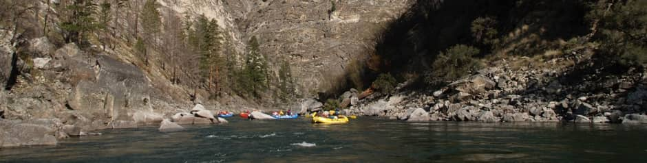
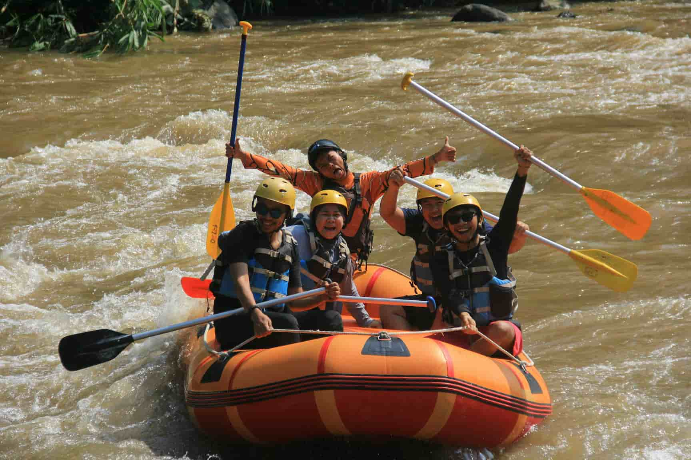

Welcome to White Water Rafting, where we offer exciting and safe river adventures for all skill levels. Our experienced guides lead you through thrilling rapids and scenic routes, ensuring an unforgettable experience. Join us for a journey full of excitement, teamwork, and lasting memories!


White Water Rafting
History
White Water Rafting was founded in the early 2000s by the Silva family, a Brazilian family passionate about nature and adventure. They offer thrilling rafting experiences on the White Water River, known for its exciting rapids and scenic beauty. Starting with a small operation, the company quickly grew, gaining a reputation for safety, expert guides, and eco-friendly practices. White Waters Rafting now offers both single-day and multi-day trips, combining rafting with camping and wildlife exploration. The family remains committed to preserving the river’s ecosystem and providing unforgettable experiences for adventurers worldwide.
Adventure Awaits You!